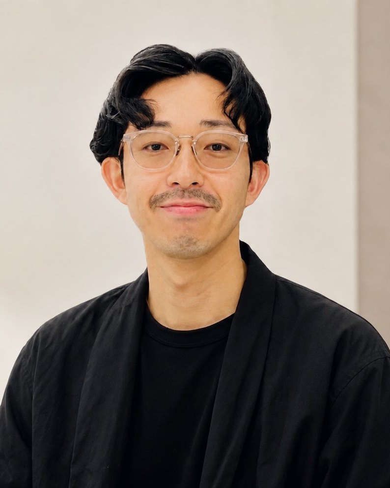
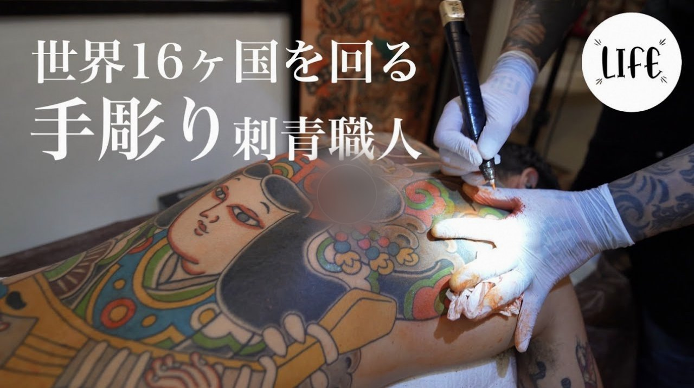

働く人
ドキュメンタリー
「ずっと
やっと
社長が
一度
撮った
- 01求人に募集の
たびに、何度でも 使える 1本に。 - 02SNSに短く
切り出して、毎月の 発信の たねに。 - 03会社案内や
説明会にはじめて会う人に、まず見て もらう 名刺に。 - 04社長の
想いの 記録に10年後に入る 人にも、同じ 言葉で届く。
Documentary for people at work — Ibaraki
中に
はじめまして、小木曽 秀弥です。売り込みではありません。どんな
01想い
働く人が、職場を選ぶ
いい
その
良さ
FURIGANAは、言葉に
02プロフィール

社長の
Gifu
Apparel
茨城・千葉・静岡の
Right hand
仕組みづくり、AIでの
FURIGANA
人手不足は、これから
Worksご依頼で、撮影と

ひとりの
03これから、やりたいこと
茨城で働く人を、一
こんな
「もしも明日、茨城が
04仕事
入る前の人に
「ずっと
やっと
社長が
一度
撮った
聞きたい
何度でも
新人は、忙しそうな
一度
撮った
何を、どの
ほかの
お店や
経営に
いい
最初の3か月で
社長の
05大切にしていること
働く人も、お客さんも、関わる人も、大切に
見えない
大切な
会社や
何を、どの
働く人と、仕事を
できあがった
使ってみて
06よくある質問
大丈夫です。お話は
撮影は、営業や
お約束は
できます。プランに
何を、どの
会社や
県外も
07連絡
会社や
30秒で、ためしに試算
1年で、およそ
150万円
求人費と、教える人のこの